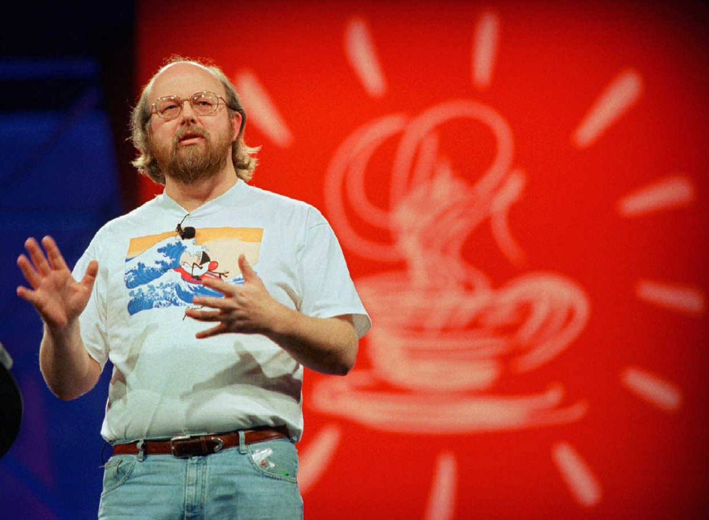

Java es un lenguaje de programación multiplataforma orientado a objetos que se ejecuta en miles de millones de dispositivos de todo el mundo. Impulsa aplicaciones, sistemas operativos de smartphones, software empresarial y muchos programas conocidos. A pesar de haber sido eliminado hace más de 20 años, Java es actualmente el lenguaje de programación más popular para los desarrolladores de aplicaciones.
¿Cuando se creo?
James Gosling creó Java en 1995 mientras trabajaba en Sun Microsystems. Aunque obtuvo popularidad rápidamente después de su lanzamiento, Java no se inició como el lenguaje de programación principal que es hoy en día.

¿Para qué se usa el lenguaje de programación Java?
James Gosling creó Java en 1995 mientras trabajaba en Sun Microsystems. Aunque obtuvo popularidad rápidamente después de su lanzamiento, Java no se inició como el lenguaje de programación principal que es hoy en día.